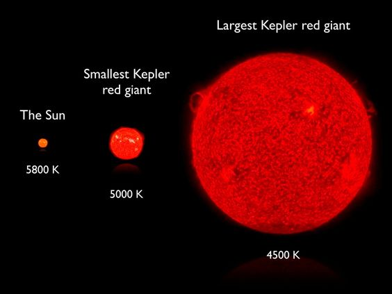

The fuel that stars burn mostly hydrogen and helium, are the life force of a star. Nuclear reactions at the centre (or core) of stars provides enough energy to make them shine brightly for many years. Bigger stars burn their fuel faster than smaller stars. So, bigger stars last only for like hundred thousand years where smaller stars last for more than billions of years.
All the stars burn hydrogen as their primary fuel. Star's death comes close when hydrogen fuel falls short or ends. At this stage they use helium. Over this time the stars expand their size, turns cold, red in color and becomes red super giant star. Red giant tends to grow more than 400 times their original size.
|

|
Here is a website with information about neutron star-